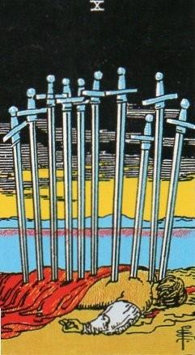
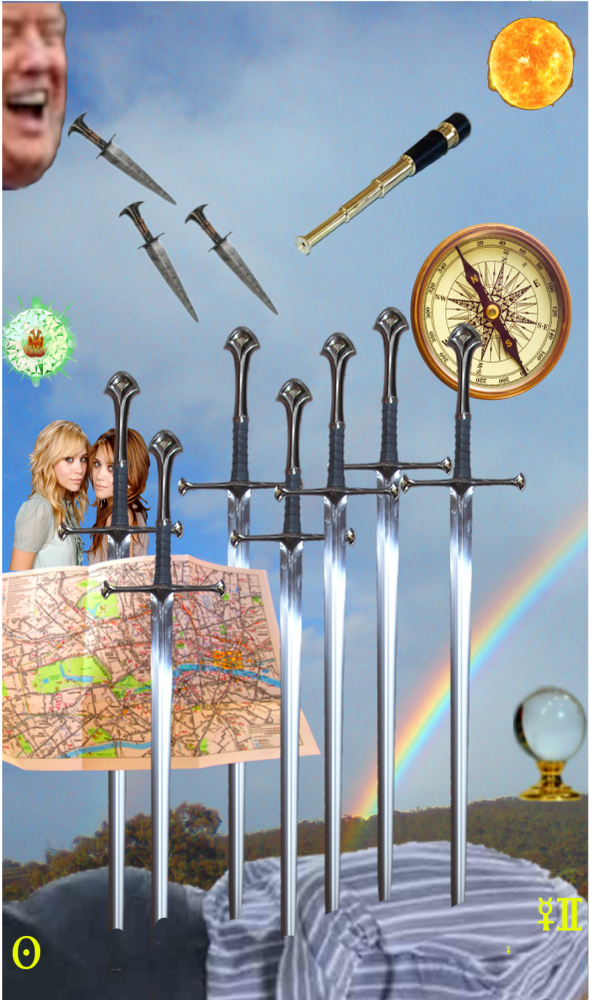
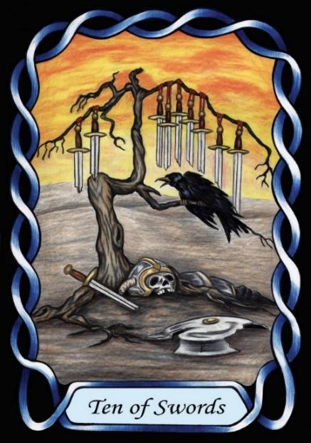

Ten of Swords



Sign |
|
Three: Communicate |
|
Sign Ruler |
|
Element |
Air - interaction |
Modality |
|
Symbol |
Twins |
Decan |
|
Decan Ruler |
|
Time |
Jun 11 - 20 |
Seeker Gemini III
The Master of communication, influenced by Mercury and the Sun, tends to talk a lot. Perhaps too much. They may be good at talking people into or out of things, such as politicians. The grandiose nature of the Sun indicates public speaking of some form, and communication that is one way – outflow rather than listening. It also shows over-confidence, as per the Sun/Phaethon myth.
The card shows the betrayal theme of RWS, but adds the implication that the Swords are words or ideas, issuing from the mouth of one of this decan’s denizens. The querent may be critical of others, or betray them. Other paraphernalia in the card indicate that their nature is seeking excellence and adventure.
Example: Donald Trump
Goldschneider Personology
These Geminis like to seek for things beyond the normal human limitations, and this is often expressed in the material world. However, their emotions can be troublesome, and may lead to friction with others.
RWS Imagery
A body lies on the ground, stabbed by Ten Swords, like Caesar, betrayed by those he trusted.
Summary
A Gemini three will say whatever it takes to manipulate you. Lying is not out of bounds. Nor are subtle emotional manipulations, nor loyalty. Nothing is out of bounds, as they are only concerned with their own Solar magnificence.